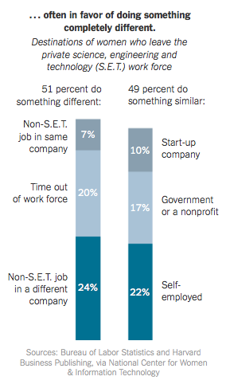

Une fille dans mon équipe?
Women In Technology
Constat
En occident, 20% de femmes dans les métiers de l'IT
Entre 5 et 7% dans les équipes de développement
Et ne parlons pas des admin système ...
Tendance
Elle ne va pas en s'améliorant
Mais pourquoi est-ce qu'elles ne viennent pas ?
C'est comme ça. Les femmes sont moins attirées par les sciences. On n'y peut rien

Sauf que ...
Si ce n'est pas inné, c'est peut-être de l'acquis alors ?...
Stéréotypes liés au genre
Stéréotypes liés à la méconnaissance des métiers de l'IT
Stéréotypes liés à la première approche
Dans ce cas-là, on peut sûrement changer quelque chose !
Oui !
- Casser les stéréotypes
- Embrigader la jeunesse ;-)
Et celles qui sont déjà là, pourquoi est-ce qu'elles ne restent pas ?
Que deviennent-elles ?

Pourquoi partent-elles ?
- Pas prises au sérieux
- Misogynie
- Conditions de travail pas adaptées
- C'est lassant d'être l'extra-terrestre et de toujours avoir à justifier sa présence
Que faire ?
Faire attention à celles qui sont là ^^
D'autres idées ?